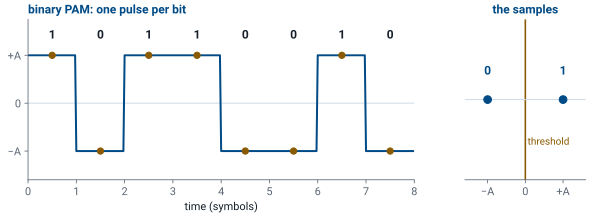
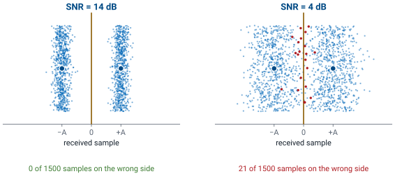
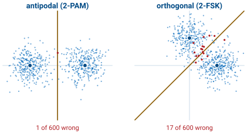
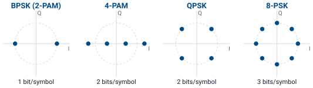
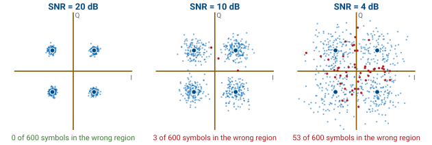
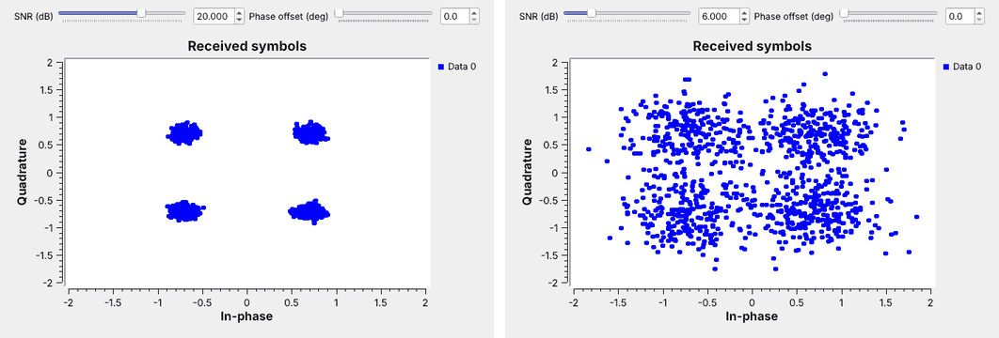
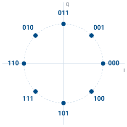
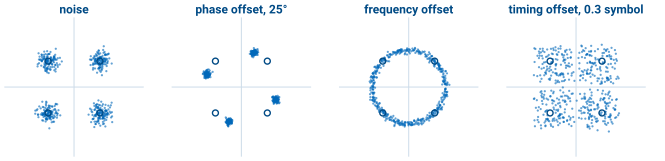

L3 - Signal Space#
Signal Space
Every digital modulation is a set of points, and noise decides how often the receiver picks the wrong one.
Lesson 3 · Module 1: Foundations of Detection & Link Budgets · Dr. Neil Rogers
Slides
Learning Objectives
- I can describe signal-space concepts (basis functions, constellations, decision regions) and apply them to a digital modulation scheme.
Three Families of Modulation
Family |
What changes per symbol |
In this course |
|---|---|---|
ASK / PAM |
amplitude |
Lessons 9 and 10 |
PSK |
phase |
Lesson 15 |
FSK |
frequency |
Lesson 8 |
\(M\) choices per symbol carry \(\log_2 M\) bits.
“\(M\)-ary” means \(M\) choices: 4-PAM, 8-PSK, 2-FSK.
A digital transmitter sends one symbol at a time, and each symbol is one of a small set of waveforms agreed on in advance. The modulation families differ in what they change from symbol to symbol. Amplitude-shift keying (ASK) and pulse amplitude modulation (PAM) change the height of the signal. Phase-shift keying (PSK) keeps the height and changes the phase of the carrier. Frequency-shift keying (FSK) changes the frequency.
With \(M\) waveforms to choose from, each symbol carries \(\log_2 M\) bits: two choices carry one bit, four carry two, eight carry three. The receiver’s whole job is to decide, for each symbol, which of the \(M\) waveforms was sent. Today we look at that decision the way the receiver does, as a picture, and watch what noise does to it. Each family gets its own flowgraph later in the course.
Part 1: Binary PAM

A 1 is a pulse at \(+A\); a 0 is a pulse at \(-A\).
Sample once per pulse and decide by sign: the threshold is 0.
The simplest digital signal is binary PAM. Each bit becomes one pulse, \(+A\) for a 1 and \(-A\) for a 0, and the pulses follow one another at the symbol rate. The two waveforms are the same pulse with opposite signs, so they are called antipodal.
The receiver takes one sample in the middle of each pulse. Without noise, every sample is exactly \(+A\) or \(-A\), and the right-hand panel shows all eight collapsing onto two points on a line. Deciding is then trivial: a sample above zero is a 1 and a sample below zero is a 0. Zero, halfway between the two points, is the decision threshold. Lesson 10 builds exactly this receiver, and GNU Radio’s Binary Slicer block is this threshold.
Noise and the Threshold

Noise turns each point into a spread of samples.
The receiver decides a sample past 0 wrong.
As the SNR falls, the spreads widen and meet.
A real receiver adds noise to every sample, the noise floor of Lesson 2, so the received value is \(+A\) or \(-A\) plus a random offset. The figure shows 1500 received samples at two SNRs, each drawn as a dot at its value; the up-and-down spread only keeps the dots apart. At 14 dB each point becomes a narrow band, and no sample comes anywhere near zero. At 4 dB the bands spread out until their edges meet at the threshold, and every sample that lands on the wrong side, drawn in red, is a wrong bit.
We will see this picture again on every display in the course. Nothing about the decision changes as the noise goes up; the threshold stays at zero. The samples just stray farther, and more of them stray across. Two things keep them on the right side: a higher SNR, which narrows the bands, and points that sit farther apart, which moves the threshold farther from each one.
Antipodal and Orthogonal

Antipodal: opposite signs, as far apart as the energy allows.
Orthogonal: two unrelated waveforms, such as two FSK tones, sit closer together.
Same energy and noise, more wrong decisions.
Binary PAM is not the only way to send one bit. Binary FSK sends one of two tones, and the two tones are orthogonal: neither looks anything like the other, so each gets its own axis. Drawn at the same energy, the antipodal points sit on opposite sides of the origin, while the orthogonal points sit one on each axis, closer together, with the boundary on the diagonal between them.
The figure sends both through the same 6 dB of noise. The clouds are the same size in both panels, but the orthogonal pair has less room between its points and its boundary, so 17 of 600 samples cross against 1 for the antipodal pair. That is the reason PAM and PSK, which can use antipodal points, get more out of the same transmitter power than FSK does. FSK has other strengths, such as a simple receiver that ignores amplitude, and Lesson 8 builds one.
Part 2: Two Basis Functions
Cosine and sine at the same frequency are orthogonal, so \(I\) and \(Q\) carry two independent numbers.
Each symbol is a point \((I, Q)\); the two waveforms are its basis functions.
On a carrier, a transmitter can change two things per symbol: how much cosine and how much sine it sends. Those two waveforms are orthogonal, in the same sense as the two FSK tones, so the receiver can recover the cosine amount and the sine amount separately. That makes the cosine and the sine a pair of basis functions, the axes of a two-dimensional signal space, and every symbol a point with coordinates \((I, Q)\).
The SDR does that separation in hardware, and Lesson 4 opens it. What arrives in GNU Radio is already the pair for every sample, packed into one complex number, \(I + jQ\). Plotting one sample per symbol on the I-Q plane gives the picture this lesson is named for.
Constellation Diagrams

PAM puts its points on a line; PSK puts them on a circle.
At the same energy, more points sit closer together.
A constellation diagram plots the points a modulation uses. 2-PAM is the binary PAM of Part 1, two points on the I axis; on a carrier the same two points are called BPSK, since flipping the sign is a 180° phase shift. 4-PAM puts four points on that line and carries two bits per symbol. \(M\)-PSK spreads \(M\) points around a circle: QPSK has four, one in each quadrant, and 8-PSK has eight.
The figure draws all four at the same average energy, which is the same transmitter power, marked by the dashed circle. More points in the same power means the points sit closer together. QPSK and 4-PAM both carry two bits, but QPSK uses both axes and keeps its points farther apart, which is why radios use QPSK rather than 4-PAM on a carrier. 4-PAM still has its place: Lesson 9 shapes it as a baseband signal, where only one axis exists.
Noise and Decision Regions

The receiver picks the nearest point.
The samples nearest each point form its decision region.
For QPSK the regions are the four quadrants.
The receiver decides each symbol the way it did for binary PAM: it picks the nearest point. Every sample closer to one point than to any other falls in that point’s decision region, and the boundaries sit halfway between neighbors. For QPSK the regions are the four quadrants, so the receiver needs only the signs of \(I\) and \(Q\). Binary PAM’s threshold at zero is the same idea on a line.
The figure sends 600 QPSK symbols at three SNRs. Noise adds a random offset to both \(I\) and \(Q\), so each point arrives as a round cloud. At 20 dB the clouds are tight and every symbol lands in its own quadrant. At 10 dB a few stray across. At 4 dB the clouds overlap and the red samples, the ones in the wrong region, are everywhere. This is what the GNU Radio constellation sink shows, starting with the RDS receiver in Lesson 7.
Try It in GNU Radio

Open
L03-noise-constellation.grcand run it.Drag the SNR from 20 dB down to 6 dB.
Add a phase offset and watch the clouds rotate.
This is the same demonstration as the figures, and it needs no SDR: an instructor demo today, and one to repeat after the Lesson 5 install. The flowgraph is adapted from the GNU Radio wiki’s QPSK Mod and Demod tutorial (its first half, without pulse shaping). A Random Source picks symbols 0 to 3, Chunks to Symbols maps each one to a QPSK point through a Gray-coded table, and a Channel Model adds noise; its noise voltage is set from the SNR slider. A QT GUI Constellation Sink plots the result. A Multiply Const block between them rotates every point by the phase offset.
Start at 20 dB, where the four points are tight dots, and drag the slider down. Somewhere below 10 dB the clouds start to reach the axes, which are QPSK’s decision boundaries, and at 6 dB, the right-hand panel, they run into each other. Then put the SNR back at 20 dB and raise the phase offset toward 45°. Open Chunks to Symbols and read its symbol table: that list of four complex numbers is the constellation, in Gray order.
Constellation Explorer
The widget transmits random symbols, adds noise at the chosen SNR, and decides each one by the nearest point. The shaded tiles are the decision regions, and a symbol that lands in the wrong one turns red; the readouts count them. Start on QPSK at 12 dB, then switch to 8-PSK at the same SNR: the points sit closer together, the clouds reach the boundaries, and the red count climbs. Raise the SNR until 8-PSK is as clean as QPSK was, then step up to 16-PSK and do it again: each step up the ladder needs more SNR. Then try 4-PAM against QPSK at the same SNR. Last, return to QPSK and add a phase offset: the clouds rotate toward the boundaries, and past \(45^\circ\) every symbol would land in the wrong region even with no noise at all, which is why the receiver of Lesson 15 corrects the phase before it decides.
Part 3: Gray Coding

Each label differs from its neighbors by one bit.
A slip to a neighbor then costs one bit, not three.
Which bits go on which point is a design choice, and it matters. When noise pushes a sample into the wrong region, it is almost always a neighbor’s region, so the labels should make that slip corrupt as few bits as possible. Gray coding labels the points so that each one differs from its neighbors in exactly one bit.
Try it before looking at the figure: label the eight points of 8-PSK, starting from 000 at 0°, so that every pair of neighbors, including the last and the first, differs in one bit. With the natural binary order instead, 011 and 100 sit next to each other, and a slip between them corrupts all three bits. Every modulator we build in GNU Radio uses a Gray code, set in the table of its Chunks to Symbols or Constellation Object block.
Reading a Constellation in GNU Radio

Each receiver problem has its own shape on the constellation.
From Lesson 7 on, the constellation sink is the first place we look.
GNU Radio’s constellation sink plots received samples exactly as in this lesson, and it is the first place to look when a receiver fails, because each problem leaves its own shape. Noise spreads each point into a round cloud, and the cloud’s size tells us how good the SNR is. A phase offset between the transmitter and receiver oscillators rotates the whole constellation. A frequency offset makes that rotation continuous, so the points smear into a ring. A timing offset, sampling each symbol off its peak, mixes in neighboring symbols and smears each point into a spread that noise does not explain.
Lesson 9 recovers symbol timing for PAM, and Lesson 15 recovers carrier phase and frequency for PSK. Each fix shows up on the constellation sink as these shapes collapsing back into tight clouds, and that is how we will check every receiver we build.
Key Point
A modulation is a set of points. Noise turns each point into a cloud, and a sample in a neighbor’s region is a wrong decision. Points farther apart, or a higher SNR, keep the clouds in their own regions.
Sources and Downloads
This lesson follows Dr. Rogers’s 2025 slides, Signal Space, for its topics and order. The hands-on steps follow these tutorials:
GNU Radio wiki, QPSK Mod and Demod: the Try It flowgraph is adapted from its first half, without pulse shaping.
PySDR, Digital Modulation: ASK, PSK, and FSK, constellations, and Gray coding.
Downloads:
L03-noise-constellation.grc: random QPSK symbols through noise onto a constellation sink, with SNR and phase-offset sliders. No hardware needed.
Summary
Idea |
What it is |
What to remember |
|---|---|---|
PAM, PSK, FSK |
change amplitude, phase, or frequency |
\(M\) choices carry \(\log_2 M\) bits |
Binary PAM |
pulses at \(+A\) and \(-A\) |
threshold at 0 |
Antipodal vs orthogonal |
opposite signs vs separate axes |
antipodal points sit farther apart |
Basis functions |
\(\cos\) and \(\sin\) at \(f_c\); axes \(I\) and \(Q\) |
one complex sample per symbol |
Constellation |
the \(M\) points a modulation uses |
more points, closer together |
Decision region |
samples nearest each point |
QPSK: the four quadrants |
Noise |
spreads each point into a cloud |
lower SNR, more samples in the wrong region |
Gray coding |
neighbors differ in one bit |
a slip costs one bit |
Practice
Looking Ahead
Lesson 4 opens the SDR that turns a carrier into \(I + jQ\).
Lesson 7 puts a constellation sink on a real signal.
Lessons 9, 10, and 15 build PAM and PSK receivers on these ideas.
Today we treated the receiver as an ideal box that hands us \((I, Q)\) once per symbol. Lesson 4 opens that box: the mixers that multiply by the cosine and the sine, the filters, and the analog-to-digital converter that produce the complex sample stream. Lesson 5 then puts a real signal into GNU Radio, and Lesson 7’s RDS receiver puts one onto a constellation sink.
The rest of the course builds on this picture. Lessons 9 and 10 build a PAM link and recover its symbol timing, and Lesson 15 does the same for PSK with carrier recovery. In each one we will turn up the noise and watch the clouds grow, just as we did today. Before the next lesson, be able to sketch 2-PAM, 4-PAM, QPSK, and 8-PSK, mark their decision regions, and label 8-PSK with a Gray code.